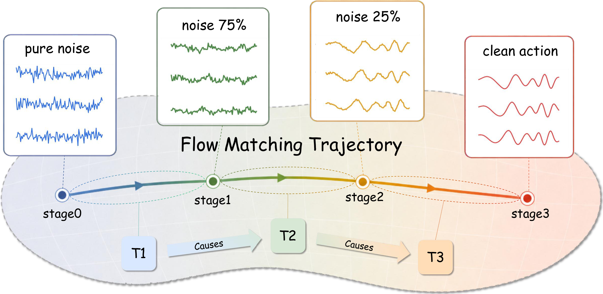
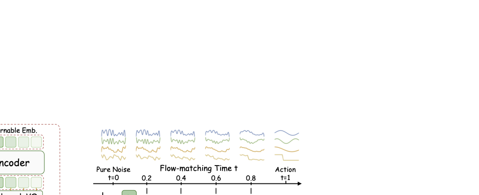
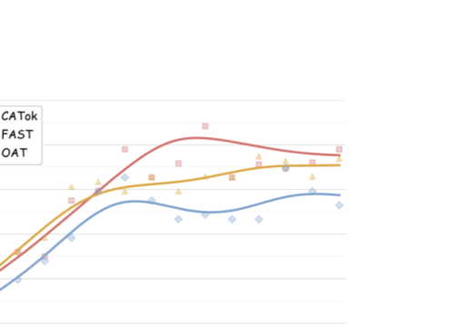
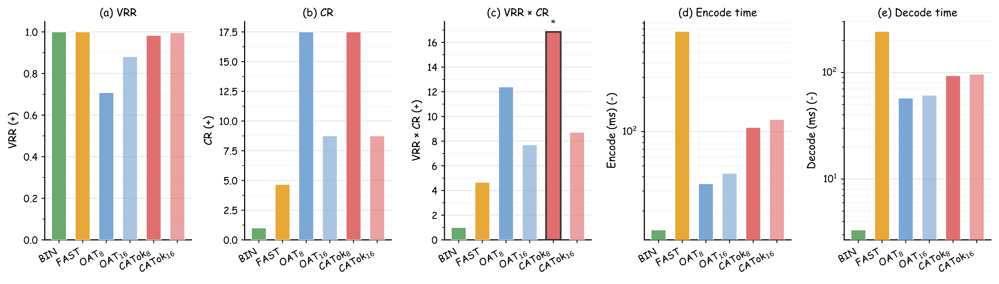
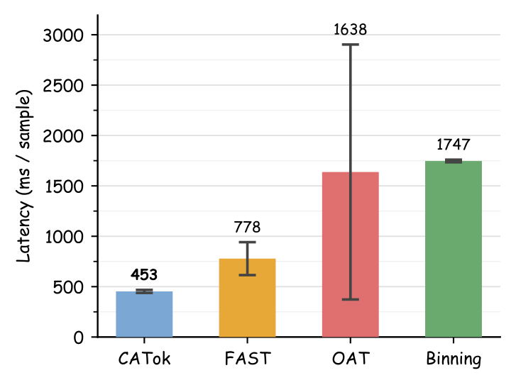
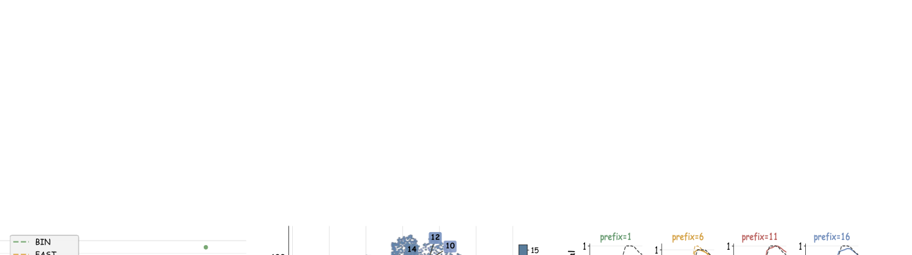

CATok reframes action tokenization as a causally structured generative process. Each discrete token encodes the residual reconstruction signal at a specific flow-matching stage, establishing a coarse-to-fine causal token space aligned with autoregressive modeling.
Autoregressive Vision-Language-Action (VLA) models offer a scalable path to robot learning, yet existing action tokenizers treat tokenization as a compression problem, producing representations that are semantically misaligned with the autoregressive backbone.
We propose CATok, a causal action tokenizer that reframes tokenization as a causally structured generative process. CATok introduces a conditional annealing mechanism that extracts action tokens by progressively annealing a flow-matching process: each token is conditioned on all preceding tokens and encodes the residual reconstruction signal at a specific noise level, establishing a coarse-to-fine causal token space whose generative semantics are structurally aligned with autoregressive modeling.
A token-conditioned flow matching decoder built on MMDiT reconstructs continuous action chunks from these discrete tokens with the precision of hybrid diffusion-head architectures, while the discrete bottleneck enforces knowledge insulation by construction—cleanly separating high-level semantic reasoning from low-level motor execution without requiring explicit attention masking.
Extensive evaluations across three simulation benchmarks demonstrate that CATok consistently surpasses existing tokenization methods in both reconstruction fidelity and task success rate, establishing a high-performance, scalable foundation for purely autoregressive VLA systems.
CATok consists of three components: (1) a Dual-Stream Action Encoder that maps raw action chunks into a compact set of latent query tokens via co-attention with an MMDiT-based transformer; (2) a Bottleneck Vector Quantizer that discretizes latent tokens into a finite codebook using factorized codes; and (3) a Flow-Matching Decoder with Conditional Annealing that reconstructs high-fidelity action trajectories while enforcing a coarse-to-fine causal structure.
The key design is the conditional annealing mechanism: at flow-matching timestep t, the first ⌊tK⌋ token embeddings are progressively masked, forcing each token to specialize in a distinct generative stage—from coarse global guidance at high-noise stages to fine-grained residual corrections as the trajectory matures. This induces a causally ordered hierarchy naturally aligned with autoregressive action generation.

Figure 1. CATok Pipeline. CATok encodes an action chunk with a Dual-Stream Encoder into latent queries, discretizes them via a Bottleneck VQ, and reconstructs actions using a Flow-Matching Decoder with Conditional Annealing. The annealing schedule assigns each token to a distinct stage of the flow trajectory, establishing a coarse-to-fine causal token space.
Figure 2. VLA-CATok. VLA-CATok feeds visual, language, and proprioceptive tokens into a VLM backbone to autoregressively predict causal action tokens. A frozen MMDiT flow-matching decoder reconstructs the final continuous action. Discrete tokens serve as the sole interface, naturally insulating the VLM's pretrained knowledge from action-specific gradients.
We evaluate CATok on three simulation benchmarks—LIBERO, SimplerEnv (Simpler-Bridge), and RoboTwin 2.0—against three representative tokenizer baselines: BIN (uniform per-dimension discretization), FAST (DCT-based compression with BPE tokenization), and OAT (learned fixed-length tokenizer with prefix-based decoding).
CATok consistently improves VLA success rates across all benchmarks. On LIBERO, CATok achieves a 95.9% average success rate, outperforming all baselines and showing the largest gains on long-horizon tasks (LIBERO-Long: 91.0% vs. 90.1% for FAST). This demonstrates that causal ordering enables autoregressive policies to model long-range temporal dependencies more effectively.
CATok also improves training efficiency. It consistently reaches higher success rates at the same training step count, attributable to its stage-wise token factorization that makes each token prediction more informative for trajectory generation.
| Method | LIBERO | Simpler-Bridge | RoboTwin 2.0 | |||||||||
|---|---|---|---|---|---|---|---|---|---|---|---|---|
| Spatial | Object | Goal | Long | Avg. | Spoon | Carrot | Stack | Eggplant | Avg. | Clean | Rand. | |
| BIN | 0.586 | 0.878 | 0.680 | 0.604 | 0.687 | 0.542 | 0.333 | 0.208 | 0.708 | 0.448 | — | — |
| FAST | 0.960 | 0.998 | 0.962 | 0.901 | 0.955 | 0.500 | 0.375 | 0.375 | 0.625 | 0.469 | 0.478 | 0.478 |
| OAT | 0.428 | 0.876 | 0.704 | 0.276 | 0.571 | 0.417 | 0.208 | 0.167 | 0.667 | 0.365 | — | — |
| CATok (Ours) | 0.978 | 0.994 | 0.954 | 0.910 | 0.959 | 0.458 | 0.417 | 0.542 | 0.542 | 0.490 | — | — |
Table 1. Simulation benchmarking results. CATok consistently outperforms baseline tokenizers across all benchmarks. Blue bold values indicate best results per column.

Figure 3. Training efficiency on Simpler-Bridge. CATok achieves higher success rates with fewer training steps. The causal token structure provides a natural stage-wise factorization that makes each token prediction more informative for trajectory generation.


Figure 4. Intrinsic properties of action tokenizers. (a–c) CATok8 achieves the highest VRR×CR score (16.85), outperforming all baselines at the same compression level. (d–e) Encode and decode latencies on log scale—CATok achieves lower latency than FAST with comparable or better downstream performance.
We analyze two complementary questions: (1) are CATok tokens causally ordered? and (2) do they carry distinct generative semantics across positions?
Causal Predictive Ordering. We train a lightweight action-only autoregressive transformer per tokenizer and measure the per-token Shannon entropy Hk on held-out LIBERO–Bridge chunks. If tokens are causally ordered, entropy should decrease as more prefix tokens are observed—each additional token reducing uncertainty over the next.
As shown in Figure 5(a), CATok fwd exhibits a clear decreasing entropy trend, while CATok rev (same tokens predicted in reverse order) shows the opposite trend—confirming the learned ordering is directional and causal, not arbitrary. FAST is nearly flat and BIN mildly increases, indicating neither induces meaningful causal structure.
Stage-wise Generative Semantics. We visualize VQ embeddings from 32,768 LIBERO action chunks via t-SNE (Figure 5(b)). Embeddings are clearly organized by token slot: early slots form smooth elongated regions, middle slots become more diffuse, and late slots form compact separated clusters. This slot-dependent geometry shows that CATok tokens occupy distinct generative roles—progressing from shared motion factors to specialized residual corrections—rather than being exchangeable codebook indices.
We further reconstruct action chunks from token prefixes of increasing length (n ∈ {1, 6, 11, 16}). As shown in Figure 5(c), adding tokens induces coherent trajectory updates—from structural changes in spatial, rotation, and gripper dimensions to finer residual refinements—confirming each token serves as a meaningful generative increment.
Together, these probes show that CATok learns a coarse-to-fine generative hierarchy aligned with autoregressive modeling: earlier tokens capture shared global structure while later tokens contribute increasingly specialized residual refinements.

Figure 5. CATok produces causal tokens with generative semantics. (a) Causal ordering: entropy decreases in the forward token order and increases in reverse, while FAST and BIN show weaker positional structure. (b) Token embedding geometry: t-SNE map shows clear slot-dependent organization progressing from smooth early-token regions to compact late-token clusters. (c) Prefix reconstruction: increasing token prefixes produce structured trajectory updates, with each token contributing a meaningful generative increment to the decoded action.